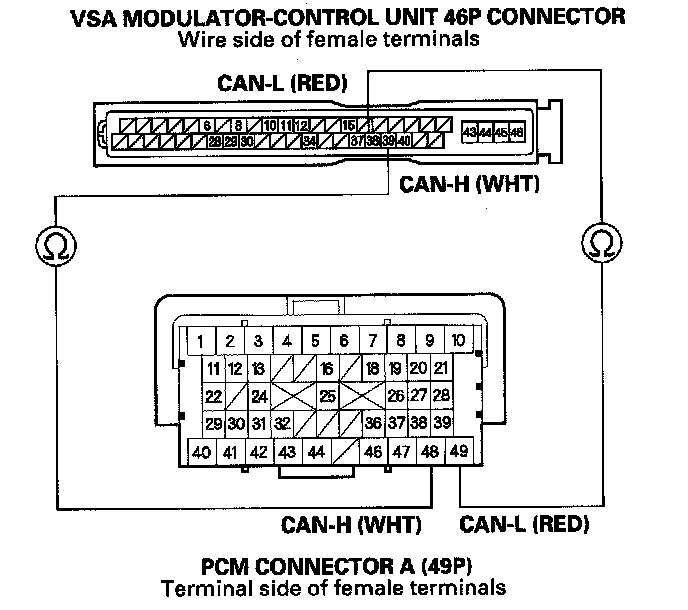
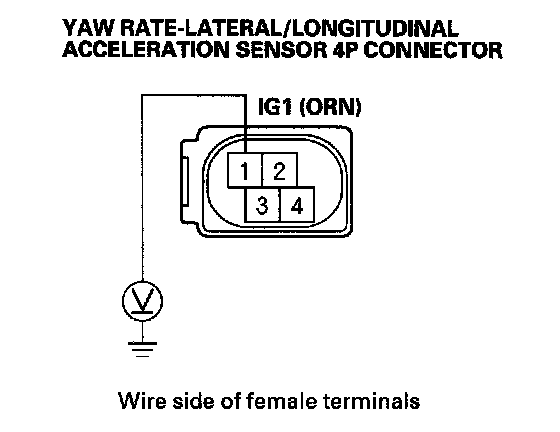
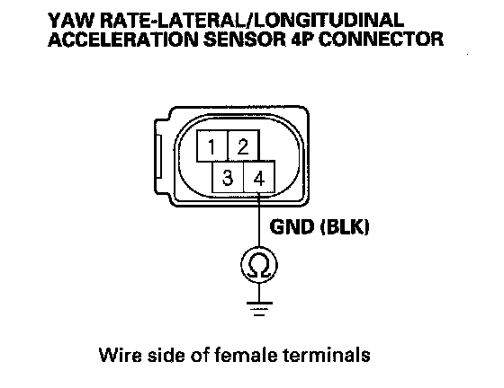
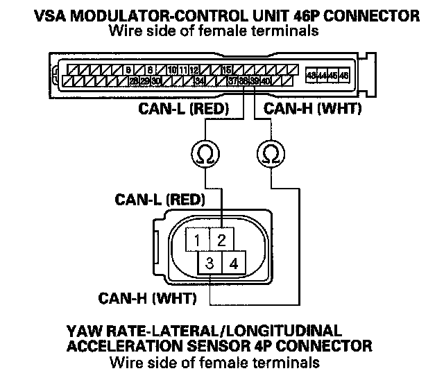

VSA (Vehicle Stability Assist)
DTC 91: F-CAN CommunicationNOTE: Check the PCM for DTCs. If there are DTCs present, troubleshoot them first.
1. Turn the ignition switch ON (II).
2. Clear the DTC with the HDS.
3. Turn the ignition switch OFF, then turn it ON (II) again.
4. Check for DTCs with the HDS.
Is DTC 92 indicated with DTC 91 at the same time?
YES-Do the DTC 92 troubleshooting
NO-If only DTC 91 is indicated, go to step 5. If no DTCs are indicated, intermittent failure, the system is OK at this time. Check for loose terminals between the yaw rate-lateral/longitudinal acceleration sensor 4P connector, the PCM connector A (49P), and the VSA modulator-control unit 46P connector. Check for a loose connection at G303. Refer to intermittent failures troubleshooting.
5. Turn the ignition switch OFF.
6. Short the SCS line with the HDS.
7. Disconnect the PCM connector A (49P).
8. Disconnect the VSA modulator-control unit 46P connector.
9. Check for continuity between VSA modulator control unit 46P connector terminal No. 38, and No. 39 and PCM connector A (49P) terminal No. 49, and No. 48 respectively.

Is there continuity?
YES-Go to step 10.
NO-Repair open in the wire between the PCM and the VSA modulator-control unit.
10. Disconnect the yaw rate-lateral/longitudinal acceleration sensor 4P connector.
11. Turn the ignition switch ON (II).
12. Measure the voltage between yaw rate-lateral/longitudinal acceleration sensor 4P connector terminal No. 1 and body ground.

Is there battery voltage?
YES-Go to step 13.
NO-Repair open in the wire between the No. 29 (10 A) fuse in the under-dash fuse/relay box and the yaw rate lateral/longitudinal acceleration sensor
13. Turn the ignition switch OFF.
14. Check for continuity between yaw rate-lateral/longitudinal acceleration sensor 4P connector terminal No. 4 and body ground.

Is there continuity?
YES-Go to step 15.
NO-Repair open in the wire between the yaw rate lateral/longitudinal acceleration sensor and body ground (G506)
15. Reconnect all connectors.
16. Test-drive the vehicle. Check the YAW RATE S in the VSA DATA LIST with the HDS while driving in corners.
Are there 0°/s indicated?
YES-Go to step 17.
NO-Check the fuel and emissions DTCs, and troubleshoot the indicated DTC.
17. Check for continuity between VSA modulator control unit 46P connector terminal No. 38, and No. 39 and yaw rate lateral/longitudinal acceleration sensor 4P connector terminal No. 2, and No. 3 respectively.

Is there continuity?
YES-Replace the yaw rate-lateral/longitudinal acceleration sensor.
NO-Repair open in the wire between the yaw rate lateral/longitudinal acceleration sensor and the VSA modulator-control unit.